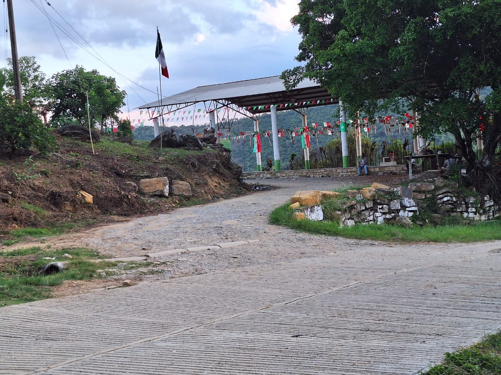
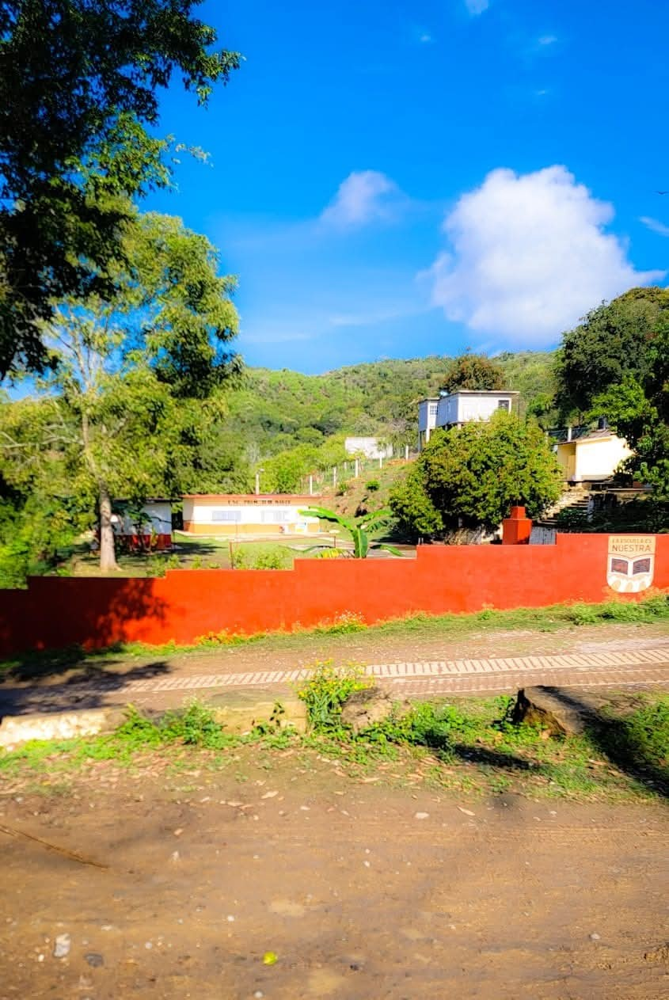
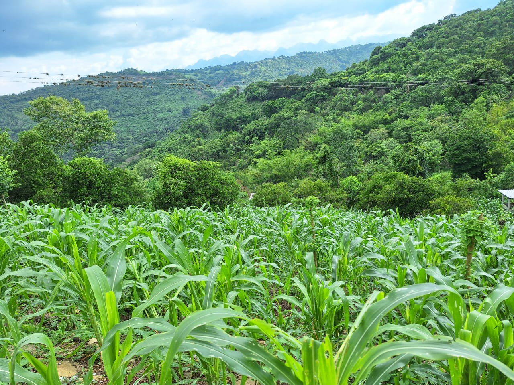
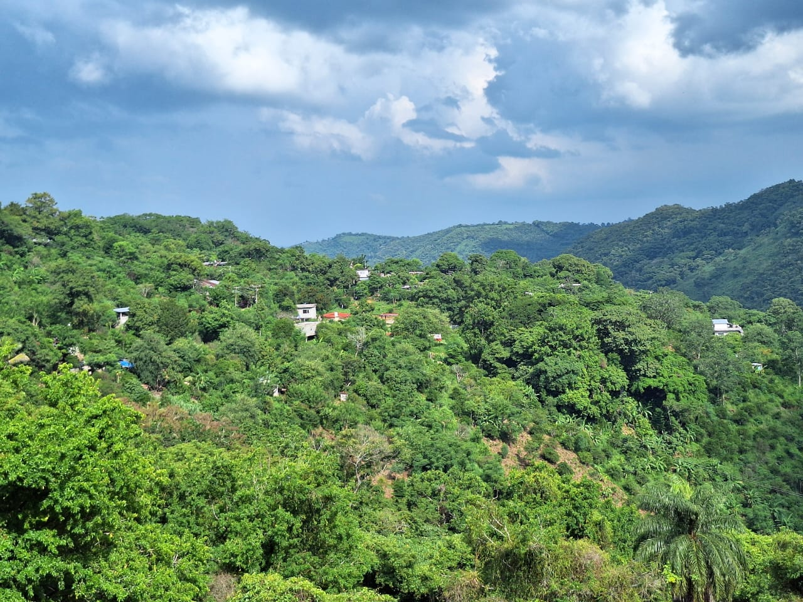
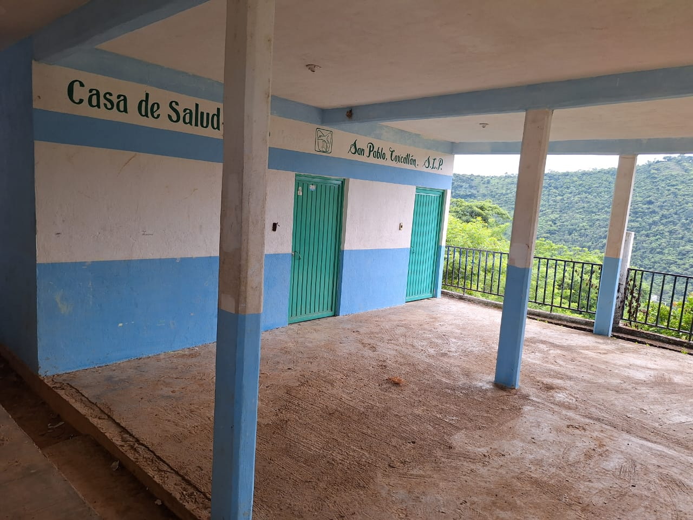
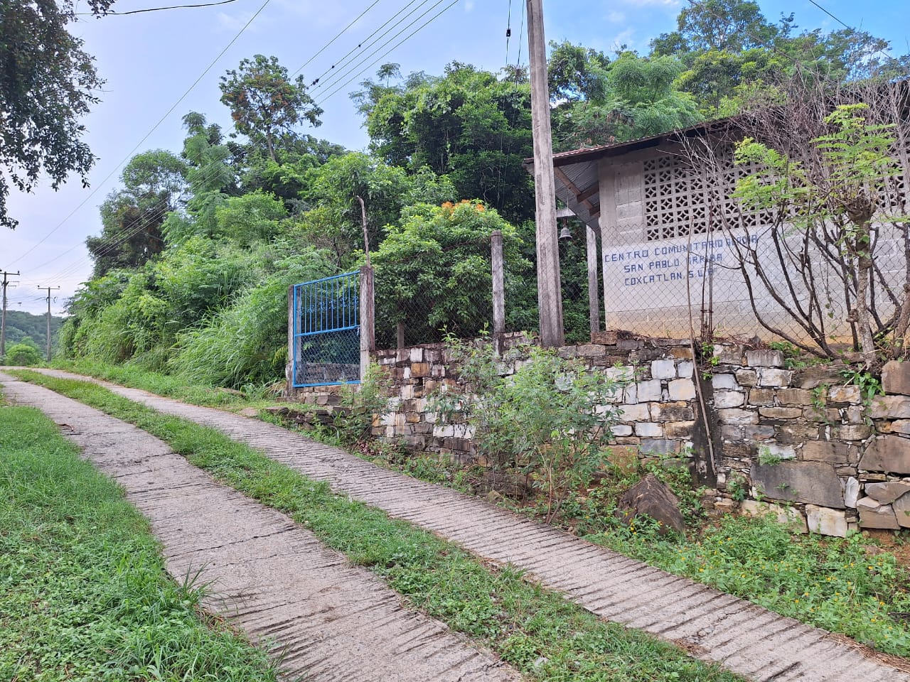
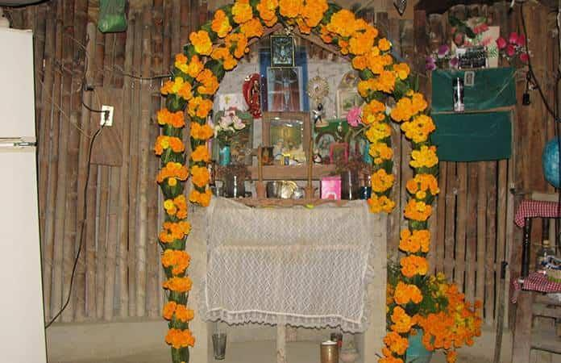
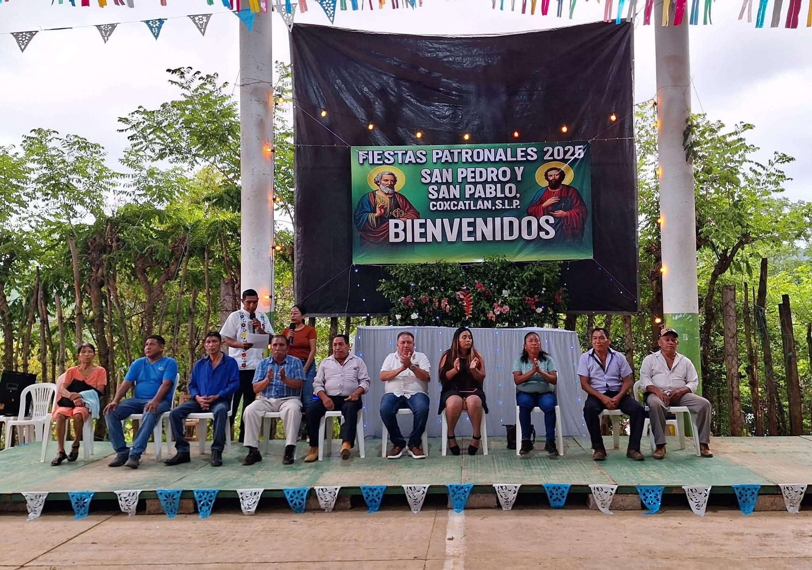
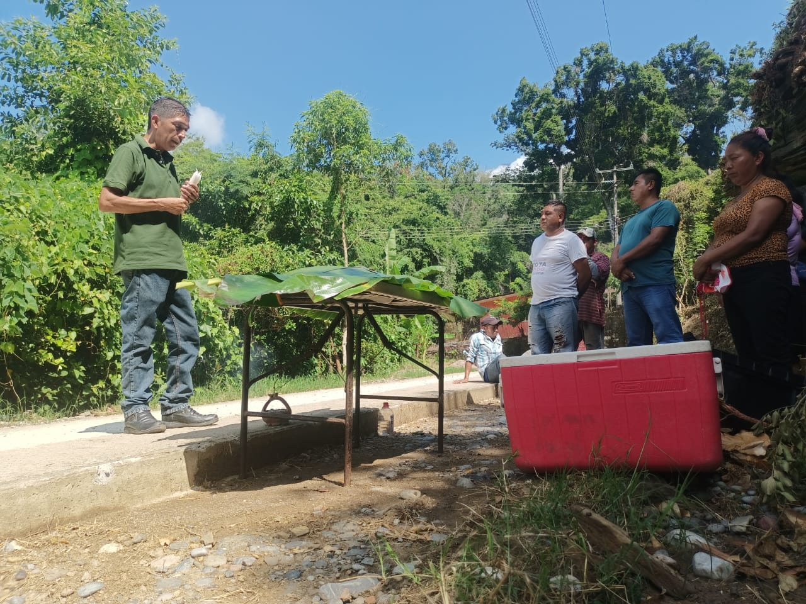
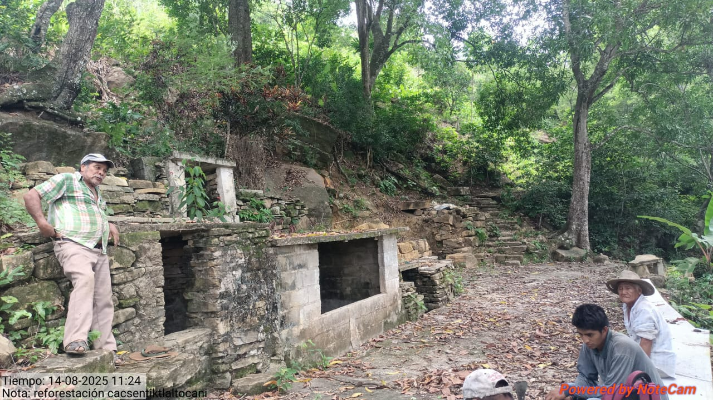

SAN PABL
"In Xochitl In Cuicatl" — Preservando nuestras raíces con tecnología moderna.
Bienvenido a la página web digital de San Pablo. Este espacio está dedicado al rescate de la cultura náhuatl, donde la sabiduría ancestral de la Huasteca Potosina se encuentra con herramientas digitales, con el propósito de preservar la identidad cultural de la comunidad y evitar que desaparezca con el tiempo.
HISTORIA
La tierra fue adquirida por 12 personas que eran comuneros. Se compró debido a que anteriormente el terreno se encontraba libre, abarcando lo que actualmente es la comunidad de San Pablo y Palzoquillo. Durante la época del gobierno de Porfirio Díaz, se realizó el reparto de tierras, indicando que los habitantes debían delimitar sus terrenos para establecer los límites comunitarios. Inicialmente, el territorio de San Pablo incluía zonas que hoy colindan con Mahuajco y Piaxtla. Sin embargo, al considerar que eran pocos habitantes y que el terreno era demasiado grande para cubrir el pago de la renta, decidieron reducir una parte. A pesar de ello, el cobro se mantuvo igual, por lo que posteriormente argumentaron que no habían realizado la reducción. El terreno que quedó fuera no pudo recuperarse, ya que otras personas comenzaron a habitarlo.
El área total del terreno después de la repartición quedó en 176 hectáreas con 76 áreas. Debido a la baja población en ese momento, los habitantes se repartieron grandes extensiones de tierra. En un inicio, existía una sola comunidad llamada San Pablo, la cual colinda con Tatacuatla y Tanleab 2 del municipio de Huehuetlán, Piaxtla del municipio de Tancanhuitz de Santos, así como con Tioamel y Mahuajco del municipio de Coxcatlán. El terreno fue medido por un ingeniero que estableció los límites con dichas comunidades.
El nombre de la comunidad, San Pablo, fue asignado por sus propios habitantes. En sus inicios, solo existía una capilla ubicada en lo que hoy es Palzoquillo, donde la población se reunía para realizar fiestas, misas y eventos religiosos como comuniones, bautizos y bodas. Estas actividades comenzaban desde la tarde y se extendían hasta la noche. Durante estos encuentros se disfrutaban alimentos tradicionales como tamales, café, enchiladas y otros productos locales. Además, se realizaban danzas tradicionales como la Danza de las Varitas (Tlancuancoyolmej) y la Danza de las Sonajas (Ayacachuicatl). En ese tiempo, los abuelos adquirieron una imagen religiosa que denominaron San Pablo y Pedro.
Galería
Explora visualmente los lugares más representativos de la comunidad. Haz clic en las imágenes para ampliar.

Galera comunitaria: Lugar de fiestas y reuniones.

Escuela Primaria: Espacio de formación para las futuras generaciones.

Cultivos: Producción agrícola de temporada de la comunidad.

Vista San Pablo: Punto ideal para apreciar el paisaje.

Casa de salud: Espacio de atención y prevención comunitaria.

Centro comunitario: Lugar de reunión de autoridades.
Tradiciones

Xantolo / Día de Muertos
Es la tradición más sagrada de la comunidad. Representa el regreso de las almas, simbolizado mediante arcos de cempasúchil, alimentos tradicionales y convivencia familiar en honor a los difuntos.

Fiestas Patronales
Celebradas en junio en honor a San Pedro y San Pablo, incluyen danzas tradicionales, procesiones y convivencia comunitaria.

Convivio con la Naturaleza
Ritual de agradecimiento a la tierra por la cosecha, acompañado de alimentos tradicionales y prácticas ancestrales.

La Fiesta del Pozo
Celebración comunitaria en torno al agua, acompañada de música, gastronomía y rituales tradicionales.

Danzas y Música Náhuatl
Expresión cultural que mantiene viva la identidad mediante danzas tradicionales y música ancestral.
Ubicación
San Pablo, Coxcatlán, S.L.P. — Nuestra comunidad.
📍 San Pablo, C.P. 79861, Coxcatlán, San Luis Potosí.
Ver en Google MapsNoticias
Un espacio interactivo para mantener informada a la comunidad.
Agregar Nueva Noticia
Archivo Comunitario
Creadores
Proyecto desarrollado con el corazón y la sabiduría de la comunidad.
Gilberto Hernandez Miguel
Rol Analista
Uriel Diaz Manuel
Rol Diseñador

Juan Carlos Cruz
Rol Programador/ diseñador